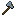
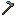

ゲームアイテム
電動アイテムと手持ち工具：バッテリーポーチ、焼き入れ鉄。
 鍛冶ハンマー鍛造ハンマーは機械による自動化が現れる前に金属プレートを作るための早期段階の手動ツールです。作業台にハンマーとインゴットを置くと、その金属のプレートが得られます。ハンマーは材料として消費されず、クラフトグリッドに残り、プレートごとに 1 ポイント…実装済み
鍛冶ハンマー鍛造ハンマーは機械による自動化が現れる前に金属プレートを作るための早期段階の手動ツールです。作業台にハンマーとインゴットを置くと、その金属のプレートが得られます。ハンマーは材料として消費されず、クラフトグリッドに残り、プレートごとに 1 ポイント…実装済み レンチレンチは消費されず、2つのことができます。アイテムパイプの面の向きを設定することと、本MODのブロックを解体することです。実装済み
レンチレンチは消費されず、2つのことができます。アイテムパイプの面の向きを設定することと、本MODのブロックを解体することです。実装済み- 焼き入れ鉄のツルハシ焼き入れ鉄のツルハシは Ala Industrial MOD初の手動ツールです。MODの焼き入れ鉄から通常のツルハシのパターンで作業台でクラフトします。実装済み
 Tempered Iron Tools焼き入れ鉄の道具は Ala Industrial MODの5つの手持ちツールのセットです。ツルハシ、斧、クワ、シャベル、剣。それぞれがバニラの対応物と同じようにクラフトされますが、鉄インゴットの代わりにMODの焼き入れ鉄を使います。実装済み
Tempered Iron Tools焼き入れ鉄の道具は Ala Industrial MODの5つの手持ちツールのセットです。ツルハシ、斧、クワ、シャベル、剣。それぞれがバニラの対応物と同じようにクラフトされますが、鉄インゴットの代わりにMODの焼き入れ鉄を使います。実装済み 焼き入れ鉄のチェストプレート焼き入れ鉄の防具は4つのアイテムからなる完全なセットです。ヘルメット、チェストプレート、レギンス、ブーツ。各部位は対応する鉄製のものより耐久値が高く、焼き入れ鉄で修理できます（タグ tempered_iron_armor_materials 経由）。防御値は鉄よりわずかに高いですが、ダイヤモンドより低く、ゲーム序盤と終盤の中間に位置します。実装済み
焼き入れ鉄のチェストプレート焼き入れ鉄の防具は4つのアイテムからなる完全なセットです。ヘルメット、チェストプレート、レギンス、ブーツ。各部位は対応する鉄製のものより耐久値が高く、焼き入れ鉄で修理できます（タグ tempered_iron_armor_materials 経由）。防御値は鉄よりわずかに高いですが、ダイヤモンドより低く、ゲーム序盤と終盤の中間に位置します。実装済み Scythe大鎌は装飾植被の迅速なクリアリングと収穫を行う手持ちツールです。ブロックを右クリックすると、前方の平らな範囲内の適切な植被——葉、草、花、シダ、キノコ、ツタ、根、苗木——をすべて刈り取り、各ブロックを手で壊したのと同じ通常ドロップを落とします。Shift を押しながらだと、大鎌が AOE…実装済み
Scythe大鎌は装飾植被の迅速なクリアリングと収穫を行う手持ちツールです。ブロックを右クリックすると、前方の平らな範囲内の適切な植被——葉、草、花、シダ、キノコ、ツタ、根、苗木——をすべて刈り取り、各ブロックを手で壊したのと同じ通常ドロップを落とします。Shift を押しながらだと、大鎌が AOE…実装済み バッテリーポーチバッテリーポーチは本MOD初の電力アイテムです。バニラのバンドルと同じように使える携帯収納で、容量は2倍になり、充電が必要になります。インベントリのスロット1つ分だけで 128 の重さ のアイテム（一般的なブロックで約2スタック分）を収納でき、長距離遠征やインベントリが圧迫されがちな場面で重宝します。LV実装済み
バッテリーポーチバッテリーポーチは本MOD初の電力アイテムです。バニラのバンドルと同じように使える携帯収納で、容量は2倍になり、充電が必要になります。インベントリのスロット1つ分だけで 128 の重さ のアイテム（一般的なブロックで約2スタック分）を収納でき、長距離遠征やインベントリが圧迫されがちな場面で重宝します。LV実装済み- 遮蔽ポーチ遮蔽ポーチは、鉛を張ったバッテリーポーチです。持ち運びも容量も消費も まったく同じで、1 スロットに 128 の重量、2 000 EU/FE のバッファ、中身がある間は 毎秒 1 EU/FE、 充電が尽きればロック。新しく覚えることはありません — 使い方はもう知っているはずです。LV実装済み
 真空カプセル真空カプセルはスタック可能な液体コンテナです。バニラのバケツの問題を解決します。バケツはスタックできず、バケツごとにスロットを占めるため、大量の液体を運ぶのが不便です。実装済み
真空カプセル真空カプセルはスタック可能な液体コンテナです。バニラのバケツの問題を解決します。バケツはスタックできず、バケツごとにスロットを占めるため、大量の液体を運ぶのが不便です。実装済み 電動ドリル電動ドリルは本MOD初の手持ち電動ツールです。耐久値の代わりに EU/FE で動くダイヤモンドのツルハシです。ブロック1つあたりの充電が足りている間、ドリルはダイヤモンドのツルハシよりわずかに速く（速度 8.5 対 8.0、採掘レベルはダイヤモンド）採掘し、正常に破壊したブロックごとに 50 EU/FE を消費します。満充電時のバッファは 10 000 EU/FE…LV実装済み
電動ドリル電動ドリルは本MOD初の手持ち電動ツールです。耐久値の代わりに EU/FE で動くダイヤモンドのツルハシです。ブロック1つあたりの充電が足りている間、ドリルはダイヤモンドのツルハシよりわずかに速く（速度 8.5 対 8.0、採掘レベルはダイヤモンド）採掘し、正常に破壊したブロックごとに 50 EU/FE を消費します。満充電時のバッファは 10 000 EU/FE…LV実装済み- 電動シャベル電動ショベルは本MOD3つ目の手持ち電動ツールで、電動ドリル（石）と電動チェーンソー（木）に続く土担当のツールです。耐久値の代わりに EU/FE で動作します。ブロック1つあたりの充電が足りている間、ショベルは #minecraft:mineable/shovel をダイヤモンドのシャベルより速く（速度 9.0 対 8.0）採掘し、正常に破壊したブロックごとに…LV実装済み
- 電動チェーンソー電動チェーンソーは本MOD2つ目の手持ち電動ツールで、木材における電動ドリルの鏡像です。耐久値の代わりに EU/FE で動く斧です。ブロック1つあたりの充電が足りている間、チェーンソーは #minecraft:mineable/axe をダイヤモンドの斧より速く（速度 9.0 対 8.0）伐採し、正常に破壊したブロックごとに 30 EU/FE…LV実装済み
 電動クワ電動クワは同ラインの4つ目で最後の手持ち電動ツールです。ドリル（石）、チェーンソー（木）、ショベル（土）に続いて、農地を担当します。契約は同じで、耐久値の代わりに EU/FE で動作し、壊れず、放電時は素手速度でフルドロップとともに動作し続けます。LV実装済み
電動クワ電動クワは同ラインの4つ目で最後の手持ち電動ツールです。ドリル（石）、チェーンソー（木）、ショベル（土）に続いて、農地を担当します。契約は同じで、耐久値の代わりに EU/FE で動作し、壊れず、放電時は素手速度でフルドロップとともに動作し続けます。LV実装済み- 電磁石電磁石は EU/FE で充電できる利便性アイテムです。インベントリの任意のスロット（ホットバー／メイン／オフハンド）に配置され、周辺の落ちているドロップアイテムをプレイヤーに自動的に引き寄せます。坑内での鉱石ドロップ、爆発後の破片、他人の放置ドロップなどが対象です。これは ティア 1 で、5 ブロックの球状半径（上下・左右）を持ち、実際に移動したアイテムごとに…LV実装済み
 エネルギーパックエネルギーパックは装着可能なエネルギーバッファです。チェストプレートのスロットに装備し、着用している間、毎秒インベントリ内のすべての電力アイテムを充電します。現在、そのようなアイテムはバッテリーポーチのみです。パックを背負えば、ポーチは遠征中にゼロまで放電してロックされることはありません。LV実装済み
エネルギーパックエネルギーパックは装着可能なエネルギーバッファです。チェストプレートのスロットに装備し、着用している間、毎秒インベントリ内のすべての電力アイテムを充電します。現在、そのようなアイテムはバッテリーポーチのみです。パックを背負えば、ポーチは遠征中にゼロまで放電してロックされることはありません。LV実装済み ジェットパックジェットパックは飛行用の装着可能な EU/FE アイテムです。（防具の代わりに）チェストプレートのスロットを占め、30 000 EUのバッファを搭載します。空中でジャンプを押し続けると、エンジンが上向きの推力を与え、50 EU/FE/ティックを消費します。満充電で約 30 秒間…LV実装済み
ジェットパックジェットパックは飛行用の装着可能な EU/FE アイテムです。（防具の代わりに）チェストプレートのスロットを占め、30 000 EUのバッファを搭載します。空中でジャンプを押し続けると、エンジンが上向きの推力を与え、50 EU/FE/ティックを消費します。満充電で約 30 秒間…LV実装済み フラックス織のチェストプレートフラックスウィーブ防具は本MOD初の完全な EU/FE セットであり、繊維 → フラックスの糸 → フラックス織布という連鎖の到達点です。これはタンクではなく、ユーティリティスーツです。防御は鉄レベルで、プレイヤーはアイテムに充電がある間オンになるボーナス一式のために支払います。LV実装済み
フラックス織のチェストプレートフラックスウィーブ防具は本MOD初の完全な EU/FE セットであり、繊維 → フラックスの糸 → フラックス織布という連鎖の到達点です。これはタンクではなく、ユーティリティスーツです。防御は鉄レベルで、プレイヤーはアイテムに充電がある間オンになるボーナス一式のために支払います。LV実装済み 風速計風速計はエネルギー不要の手持ち機器です。建てるわけでも、何かを生産するわけでもありません。あなたが立っている地点の風速を示します。風力タービン用の塔を建設前に選ぶためであり、3回も解体して建て直すためではありません。実装済み
風速計風速計はエネルギー不要の手持ち機器です。建てるわけでも、何かを生産するわけでもありません。あなたが立っている地点の風速を示します。風力タービン用の塔を建設前に選ぶためであり、3回も解体して建て直すためではありません。実装済み テレポーターリモコンテレポーターリモコンは携帯型ビーコンアイテムです。Shift+右クリックでテレポーター局とペアリングし、その後プレイヤーを局へジャンプさせます。リモコン自体は EU/FE を保持せず、ジャンプのエネルギーは充電されたターゲット局から差し引かれます。LV実装済み
テレポーターリモコンテレポーターリモコンは携帯型ビーコンアイテムです。Shift+右クリックでテレポーター局とペアリングし、その後プレイヤーを局へジャンプさせます。リモコン自体は EU/FE を保持せず、ジャンプのエネルギーは充電されたターゲット局から差し引かれます。LV実装済み- ガイガーカウンターガイガーカウンターは電力を必要としない携帯機器です。何も生産せず、何にも影響を与えません ——聞こえるだけです。これができるまで、このMODの放射線は見えないものでした。効果はアイコンも パーティクルもなしで付与され、燃料棒ラックのそばに立ったプレイヤーは、警告を一度も受け取らないまま 1.5秒で死んでいました。実装済み
 絶縁チェストプレート絶縁一式はヘルメット・上着・レギンス・ブーツの四点からなり、通電した裸線の感電を防ぐ装備です。これは 防具ではありません。防御力は革相当で、プレイヤーが手に入れるのは数値ではなく、まだ配線を絶縁する手段が ない段階でも生きた電線のまわりで作業できる、という一点です。実装済み
絶縁チェストプレート絶縁一式はヘルメット・上着・レギンス・ブーツの四点からなり、通電した裸線の感電を防ぐ装備です。これは 防具ではありません。防御力は革相当で、プレイヤーが手に入れるのは数値ではなく、まだ配線を絶縁する手段が ない段階でも生きた電線のまわりで作業できる、という一点です。実装済み 魂の器魂の器は、銀の枠にはめられたガラスのフラスコで、底にソウルサンドが入っています。器が インベントリにあるあいだ、あなた自身が——あなたの手で、あなたの剣で、あなたの矢で——倒した 敵対モブは、その魂を器へ渡します。ペットや罠による撃破、他人による撃破は数えられません。実装済み
魂の器魂の器は、銀の枠にはめられたガラスのフラスコで、底にソウルサンドが入っています。器が インベントリにあるあいだ、あなた自身が——あなたの手で、あなたの剣で、あなたの矢で——倒した 敵対モブは、その魂を器へ渡します。ペットや罠による撃破、他人による撃破は数えられません。実装済み 遮蔽チェストプレート遮蔽スーツはフード・ジャケット・ズボン・ブーツの4部位からなり、放射線に対する唯一の装備です。 これは防具ではありません。防御力は革と同等で、買っているのは数値ではなく、ウランや稼働中の 原子炉に近づいて生きて戻る手段です。実装済み
遮蔽チェストプレート遮蔽スーツはフード・ジャケット・ズボン・ブーツの4部位からなり、放射線に対する唯一の装備です。 これは防具ではありません。防御力は革と同等で、買っているのは数値ではなく、ウランや稼働中の 原子炉に近づいて生きて戻る手段です。実装済み 電動サーベル電動サーベルは電力装備ラインの5つ目のアイテムで、初の武器です。ドリル（石）、チェーンソー（木）、ショベル（土）、クワ（農地）に続いて、戦闘の番です。ラインの契約は同じで、耐久値の代わりに EU/FE で動作し、壊れず、充電ゼロではオフになるのではなく性能が低下します。LV実装済み
電動サーベル電動サーベルは電力装備ラインの5つ目のアイテムで、初の武器です。ドリル（石）、チェーンソー（木）、ショベル（土）、クワ（農地）に続いて、戦闘の番です。ラインの契約は同じで、耐久値の代わりに EU/FE で動作し、壊れず、充電ゼロではオフになるのではなく性能が低下します。LV実装済み
その他のアイテム

焼き入れ鉄の斧 焼き入れ鉄のシャベル
焼き入れ鉄のシャベル
焼き入れ鉄のクワ 焼き入れ鉄の剣
焼き入れ鉄の剣 焼き入れ鉄のヘルメット
焼き入れ鉄のヘルメット 焼き入れ鉄のチェストプレート
焼き入れ鉄のチェストプレート焼き入れ鉄のレギンス
 焼き入れ鉄のブーツ
焼き入れ鉄のブーツ